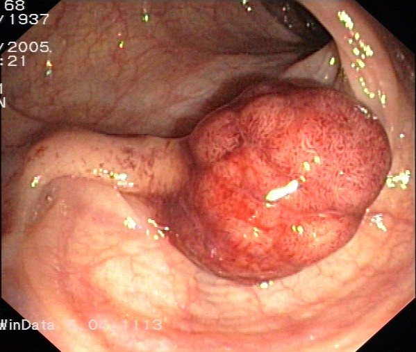
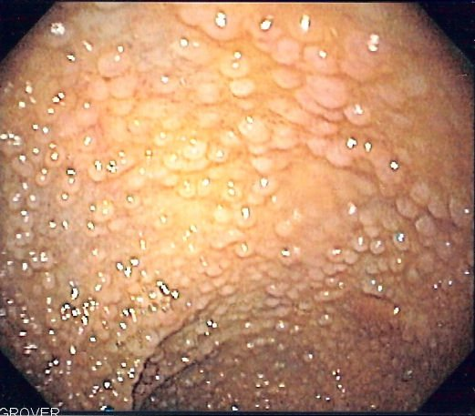
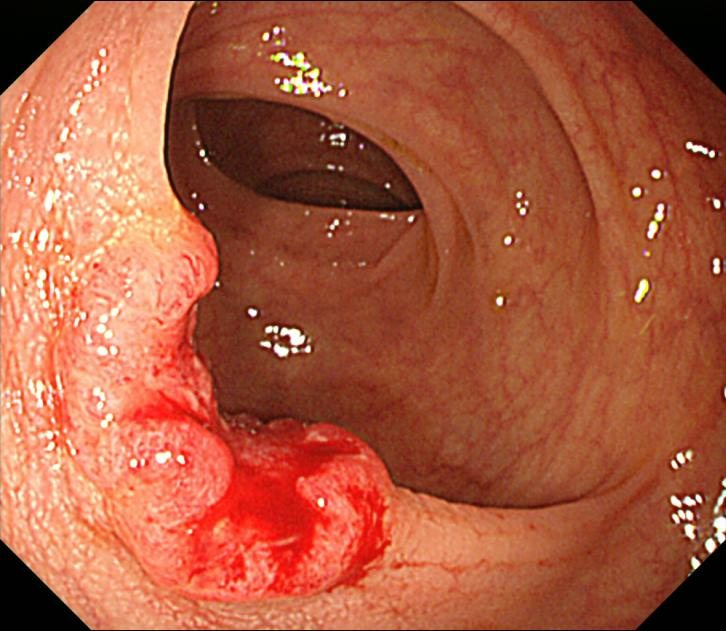
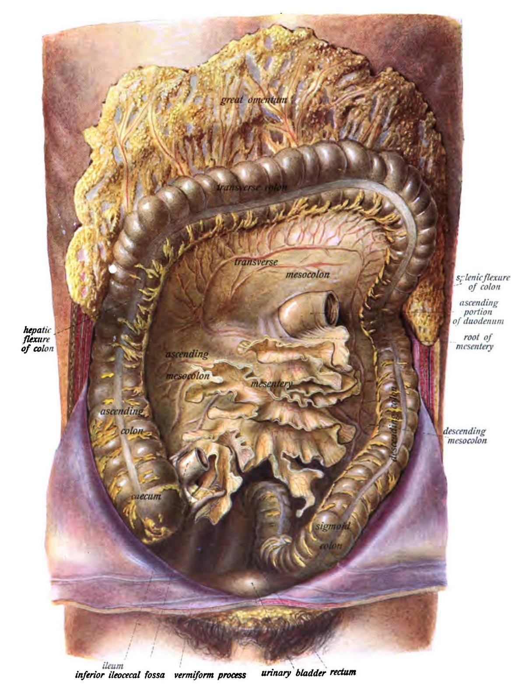
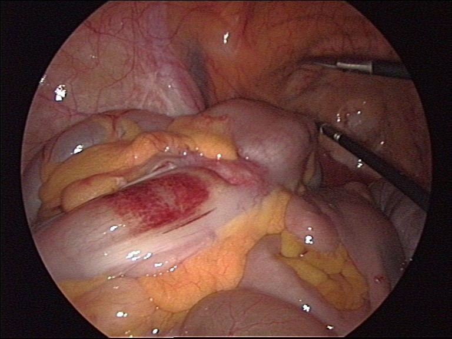
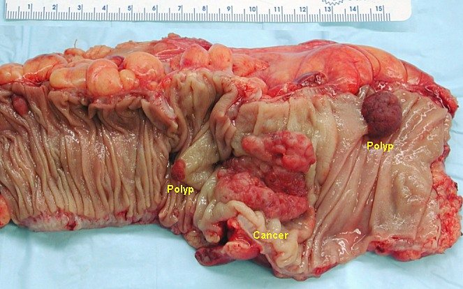
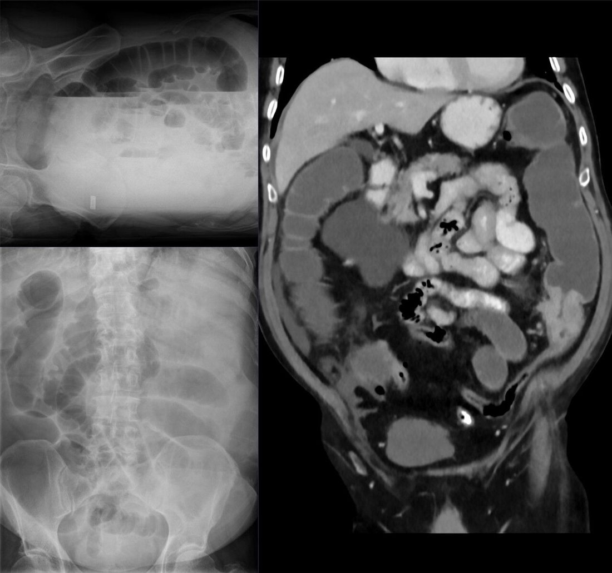

קרצינומה של הקולון והרקטום
מהפוליפ לסרטן: אפידמיולוגיה, תסמונות תורשתיות, בירור, שלבים, ניתוח לפי אספקת הדם וטיפול משלים. המיקוד במפגש הזה הוא הקולון
בסוף המפגש תדעו
- לתאר את שלושת המסלולים מפוליפ לסרטן ולזהות פוליפ בסיכון גבוה
- לזהות מטופל עם סיכון תורשתי (תסמונת לינץ׳, FAP) ולהבין מה זה משנה בטיפול
- לבנות בירור מלא לחולה חדש: קולונוסקופיה, ביופסיה עם בדיקת MMR, מעבדה ו-CT
- להסביר את שלבי TNM ולמה צריך לפחות 12 בלוטות בפתולוגיה
- להתאים את הניתוח למיקום הגידול ולאספקת הדם ולדעת מי מקבל טיפול משלים
- לנהל גידול חוסם של המעי הגס בחדר המיון
סרטן המעי הגס במספרים
- ההיארעות הכללית יורדת בזכות בדיקות הסקר. בצעירים מתחת לגיל 50 היא עולה
- חולה מתחת לגיל 50: עד 10% עם תסמונת לינץ׳. מתחת לגיל 35: 23%
- גורמי סיכון: מחלת מעי דלקתית, השמנה, סוכרת ותנגודת לאינסולין, עישון, אלכוהול, בשר אדום ומעובד וחוסר פעילות גופנית
מפוליפ לסרטן
איזה פוליפ מסוכן?
- לא ניאופלסטיים: המרטומה, פוליפ דלקתי (פסאודופוליפ). בלי פוטנציאל ממאיר עצמי
- אדנומה מתקדמת: 1 ס״מ ומעלה, דיספלזיה בדרגה גבוהה או מבנה וילוזי. מסירים באנדוסקופיה
- משונן: פוליפ היפרפלסטי בלי סיכון. אדנומה משוננת יושבת יכולה לפתח דיספלזיה וסרטן

תסמונות שהכירורג חייב לזהות
- אוטוזומלית דומיננטית: MLH1, MSH2, MSH6, PMS2, EPCAM
- 1 ל-279 באוכלוסייה, כ-3% מכלל הסרטנים במעי הגס
- קריטריוני אמסטרדם II: שלושה קרובים, שני דורות, אחד לפני גיל 50
- קולונוסקופיה כל שנה מגיל 20–25
- סרטן בקולון: כריתת כל הקולון ולא כריתה מקטעית
- מוטציה ב-APC, 1 ל-10,000. כ-20% מוטציה חדשה: היעדר סיפור משפחתי לא שולל
- סיכון לסרטן כמעט 100% בלי כריתה מונעת
- קולונוסקופיה כל שנה מגיל 10–12. ניתוח בסוף גיל ההתבגרות
- עד 20 פוליפים ברקטום: כריתת הקולון וחיבור אילאום לרקטום. יותר מ-20: כריתת קולון ורקטום עם כיס אילאלי

איך זה מגיע אלינו
- התסמינים השכיחים: שינוי בהרגלי היציאות, דם מהרקטום, כאבי בטן
- גידול בצד ימין: אנמיה מחוסר ברזל
- גידול בצד שמאל: שינוי בקוטר הצואה או דם טרי
- הרבה גידולים בלי תסמינים בכלל. לכן סקר בזמן ובמרווחים הנכונים
- חסימה משמעותית: מסבכת 8–29% מסרטני הקולון. רוב ההופעות הדחופות

הבירור של חולה חדש
שלבי TNM בקיצור
איזה ניתוח לאיזה מקטע?

👆 לחצו על מקטע של המעי הגס כדי לקרוא על אספקת הדם ועל הניתוח
אספקה מ-SMA: ileocolic, right colic (כשקיים) והענף הימני של middle colic. כריתת מעי ימנית: קשירה גבוהה של הכלים, האילאום נחתך כ-5 ס״מ מהשסתום והקולון הרוחבי בשליש הקרוב. האומנטום יוצא יחד עם הנתיח. בדיסקציה חושפים את התריסריון ואת ראש הלבלב
רוב הגידולים כאן: כריתה ימנית מורחבת. קושרים את ה-ileocolic וגם את ה-middle colic בבסיסו. החיבור לקולון הרוחבי הרחוק
אין הסכמה. אפשרויות: כריתה ימנית מורחבת, כריתה כמעט מלאה עם חיבור אילאום-קולון יורד, או כריתה מקטעית: קושרים את left colic במוצאו מה-IMA ואת הווריד IMV בגבול התחתון של הלבלב. נתונים חדשים: תוצאות אונקולוגיות דומות לכריתה מורחבת. זרימת הדם לחיבור תלויה בעורק השולי
אספקה מ-IMA (left colic). כריתה שמאלית עם קשירה גבוהה של ה-IMA, תוך הימנעות מהמקלעת העצבית שסביב מוצאו. את ה-IMV קושרים לטרלית לרצועת טרייץ. משחררים את כפיף הטחול במלואו כדי לחבר בלי מתח. החיבור בדרך כלל בשדכנים מקצה לקצה
ענפי הסיגמואיד של ה-IMA. כריתה מקטעית לפי עקרונות אונקולוגיים: החיתוך הרחוק ברקטום העליון והקרוב בקולון היורד הרחוק
ניתוח אונקולוגי טוב
- שוליים: 5–7 ס״מ מהגידול בכל צד
- בלוטות: יותר מ-12 בלוטות קשורות להישרדות טובה יותר בשלבים II–III. פחות מ-12: יותר חזרות. קשירה גבוהה של כלי הדם עוזרת להגיע לזה
- החיבור: בלי מתח, מקטעים בריאים עם אספקת דם טובה, שמירה על העורק השולי
- לפרוסקופיה ורובוט: פחות כאב, אשפוז קצר יותר, חזרה מהירה של תפקוד המעי ופחות זיהומי פצע. במחקר COST ההישרדות בלי מחלה ל-5 שנים לא נפלה מניתוח פתוח


גידול חוסם
- לאט: צואה דקה, עצירות מחמירה, בטן שהולכת ומתנפחת. בחדות: חסימה מלאה, כאב והקאות (לעיתים צואתיות)
- האבחנה: צילום בטן או CT. המטרה: לשחרר את החסימה, לכרות מעי לא חיוני ולכרות את הגידול כשאפשר

גידול ראשוני עם גרורות סינכרוניות
- הגידול הראשוני עושה תסמינים (דימום, חסימה): מטפלים בו קודם. אחר כך במחלה המרוחקת
- הגידול הראשוני שקט: טיפול סיסטמי קודם
- גרורות בכבד שניתן לכרות: כימותרפיה לפני הניתוח משפרת הישרדות בלי התקדמות. ניתוח משולב כשהמורכבות נמוכה, בשלבים כשהיא גבוהה
- גרורות בריאה שניתן לכרות: הכריתה משפרת הישרדות
- גרורות בצפק: דיון רב-תחומי. בחולים נבחרים: ניתוח הקטנת גידול עם HIPEC
מי מקבל טיפול משלים?
המעקב אחרי ניתוח מרפא
- אחרי השנתיים הראשונות: בדיקה ו-CEA כל חצי שנה, עד 5 שנים
- שלב I: בלי הדמיה ובלי סמנים, רק קולונוסקופיה
- שלב IV אחרי כריתה מרפאת: הדמיה כל 3–6 חודשים בשנתיים הראשונות, אחר כך כל 6–12 חודשים עד 5 שנים
מחקרים שכדאי להכיר
84,585 בני 55–64 בפולין, נורווגיה ושוודיה. אחרי 10 שנים: סרטן ב-0.98% מהמוזמנים לעומת 1.20% (ירידה של 18%). רק 42% הגיעו לבדיקה. אחרי 13 שנים: ירידה בהיארעות (RR 0.81) אבל לא בתמותה מהמחלה
Bretthauer M et al. N Engl J Med 2022;387:1547-56 · Kaminski MF et al. Lancet 2026;407:1787-951,053 חולים עם T3–4 בהדמיה. 6 שבועות אוקסליפלטין לפני הניתוח: יותר כריתות שלמות (94% לעומת 89%) ופחות מחלה שארית או חוזרת בשנתיים (16.9% לעומת 21.5%). מעט תועלת בגידולי dMMR
Morton D et al. J Clin Oncol 2023;41:1541-52115 חולים עם סרטן קולון מקומי מתקדם dMMR, ניבולומאב ואיפילימומאב. 98% נותחו בזמן. תגובה פתולוגית משמעותית ב-95% ותגובה מלאה ב-68%. אף חזרה במעקב חציוני של 26 חודשים
Chalabi M et al. N Engl J Med 2024;390:1949-58889 חולים אחרי כריתה וכימותרפיה משלימה. תוכנית אימון מובנית ל-3 שנים: הישרדות בלי מחלה ל-5 שנים 80.3% לעומת 73.9%. הישרדות ל-8 שנים 90.3% לעומת 83.2%
Courneya KS et al. N Engl J Med 2025;393:13-25חמישה דברים לקחת למחלקה
- רוב סרטני המעי הגס מתחילים בפוליפ. אדנומה מתקדמת (1 ס״מ ומעלה, דיספלזיה גבוהה או מבנה וילוזי) מסירים
- חולה צעיר או סיפור משפחתי: לחשוב על לינץ׳. בכל ביופסיה של סרטן בודקים MMR
- בירור: קולונוסקופיה מלאה עם קעקוע וביופסיה, CEA ו-CT חזה, בטן ואגן
- הניתוח נקבע לפי אספקת הדם: שוליים של 5–7 ס״מ, יותר מ-12 בלוטות, חיבור בלי מתח
- שלב III מקבל כימותרפיה. גידול חוסם: ניתוח דחוף או סטנט כגשר, אף פעם לא סטנט במעי איסכמי